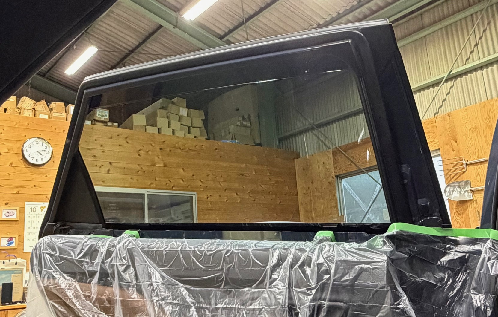
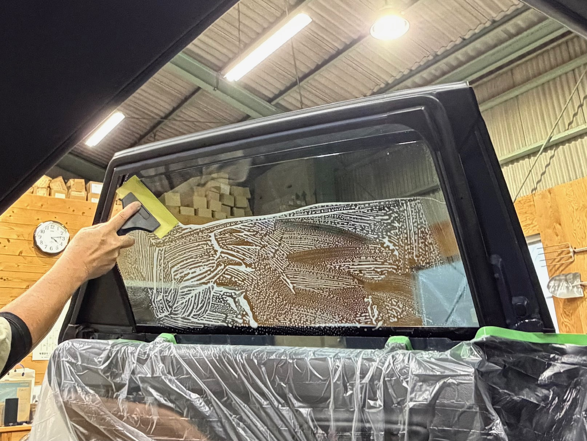
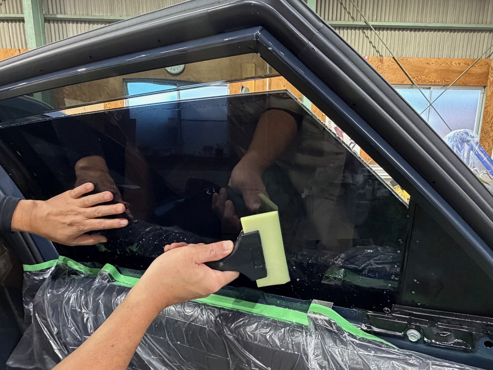
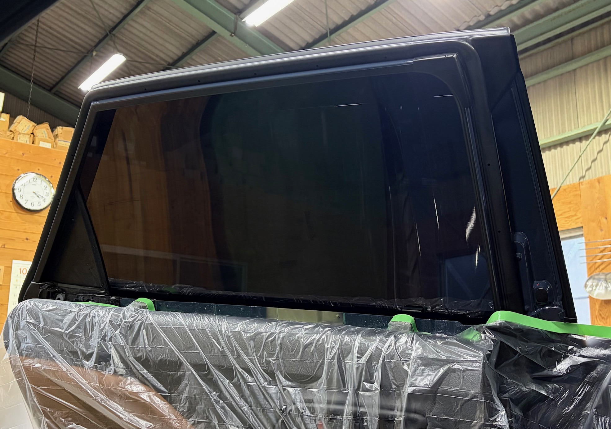

カーフィルム
見た目も、日差しも、車内からの見え方も。
濃さや断熱性能だけで決めず、外からの視線や夜の運転時の見え方も含めて相談できます。写真では、ガラスの準備から貼り付け、仕上がりまでをご覧いただけます。
HOW WE WORK
貼る前の準備から、仕上がりまで。
お預かりした写真では、施工前の窓、ガラスの清掃、フィルムの貼り付け、施工後の順に作業をご覧いただけます。
- 01
施工箇所と見え方を確認
窓のどこに貼るか、濃さや外からの見え方、夜の運転時の見え方を相談します。
- 02
ガラスをきれいにする
内装を養生してからガラス面を清掃し、貼り付ける準備をします。
- 03
フィルムを貼って仕上げる
写真のようにフィルムを貼り、仕上がりを確認します。クラウンエステートの施工前後もご覧ください。
IN THE WORKSHOP
施工写真を見る
写真を押すと大きく表示できます。






施工箇所・製品・車種によって対応や車検上の条件は異なります。施工前に確認します。
ほかの施工を見る
YOUR FIRST CONVERSATION
この施工、自分の車にも合う？
車種や気になること、普段の乗り方からお聞かせください。施工名が分からなくてもご相談いただけます。